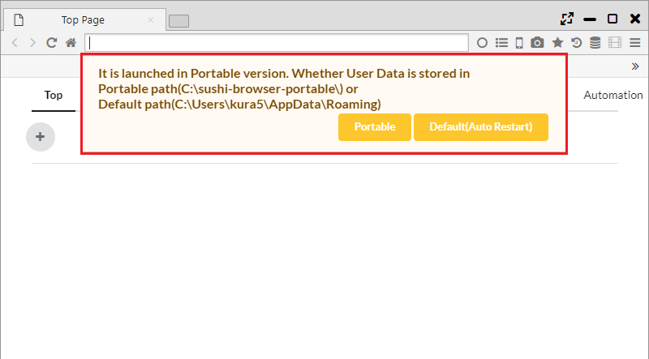

ポータブル版
Sushi Browserはインストール版とポータブル版の2つを選択できます。
ポータブル版では、ユーザデータを実行ファイルと同じフォルダに保存することができ、他のPCへ容易にデータを持ち運んだり、
同じPC内に複数のポータブル版ブラウザを起動することができます。
1. 設定ファイルの保存先
ポータブル版を起動するとはじめに以下のメッセージが表示されます。
下記はWindowsで「C:\Users\[ユーザ名]\Downloads」に解凍した場合のメッセージになります。
It is launched in Portable version. Whether User Data is stored in Portable path(C:\Users\[ユーザ名]\Downloads\sushi-browser-portable) or Default path(C:\Users\[ユーザ名]\AppData\Roaming)
Portableボタンを押すと、実行ファイルと同じフォルダにユーザデータが保存されます。 Defaultボタンを押すと、インストール版と同じフォルダにユーザデータが保存されます。
また、Portable版では以下のフォルダにデータがそれぞれ保存されます。
- data/resource/extension ・・・ chrome拡張/テーマが保存されます。
- db/resource ・・・ Sushi Browserのユーザデータが保存されます。
- automation.db - Automation用データ
- automationOrder.db - Automation用データ
- download.db - ダウンロード用データ
- downloader.db - ダウンロード用データ
- favicon.db - Faviconデータ
- favorite.db - ブックマークデータ
- history2.db - 履歴データ
- image.db - スピードダイヤル用の画像データ
- note.db - Noteデータ
- savedState.db - セッションデータ
- searchEngine.db - 検索エンジン設定
- state.db - 一般設定
- syncReplace.db - 同期ページ遷移データ
- tabState.db - tab履歴データ
- token.db - sync用データ
- visit.db - 履歴データ
- windowState.db - セッション用データ

2. アップデート(Windows版のみ)
ブラウザの次バージョンを見つけると、バージョンアップのダイアログが表示されます。
そのダイアログのメッセージの「When you run update.cmd, automatic update will be done.(Experimental)」を
クリックし、update.cmdを実行すると、自動でアップデートが行われます。